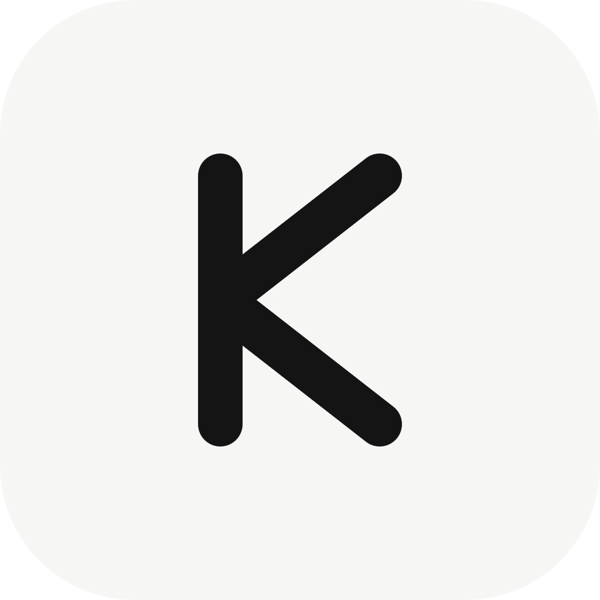
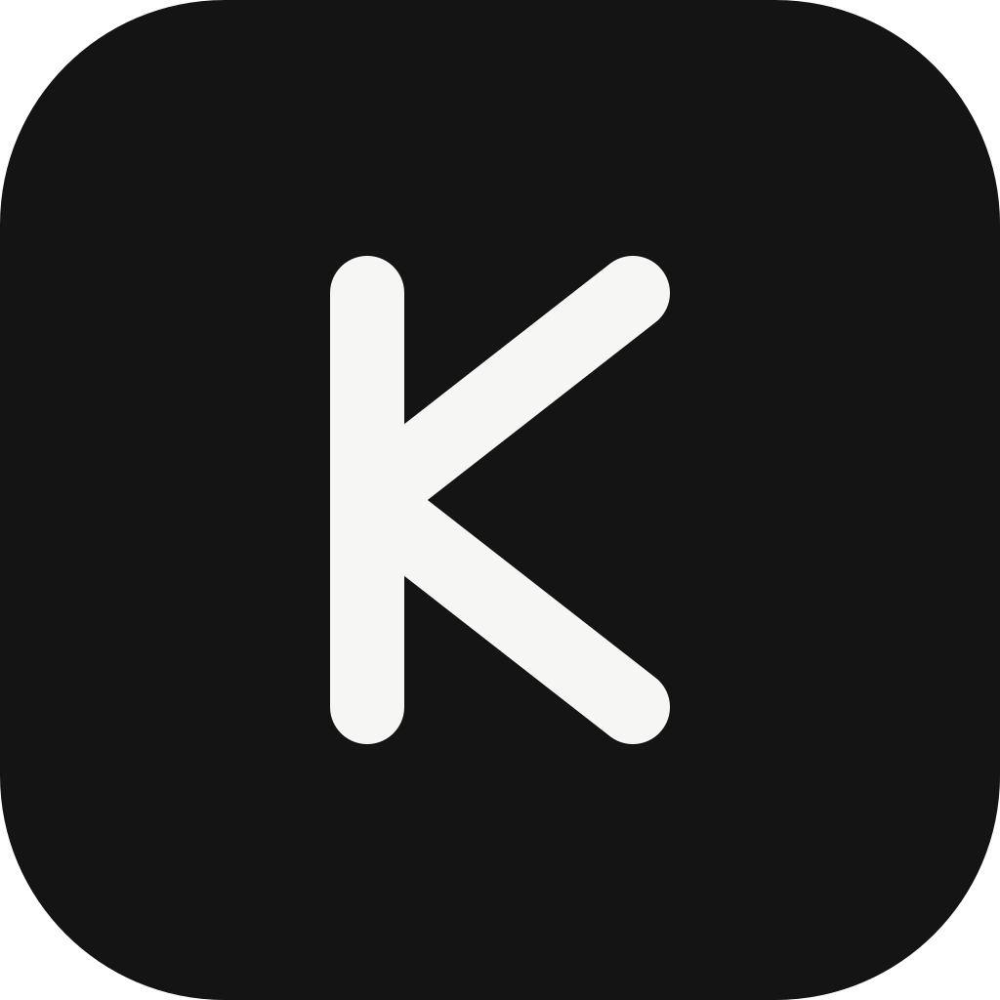
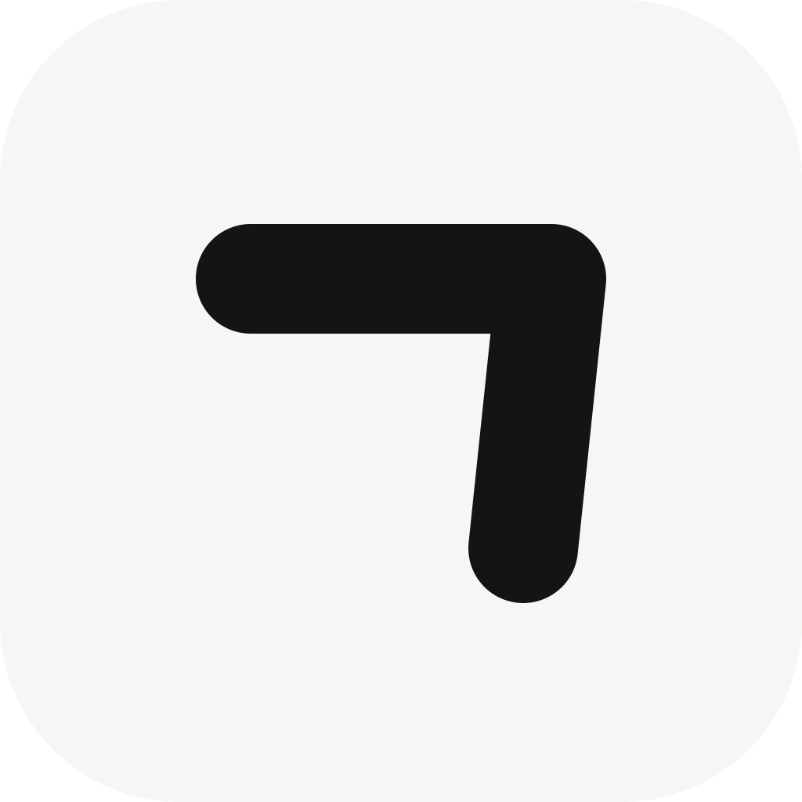
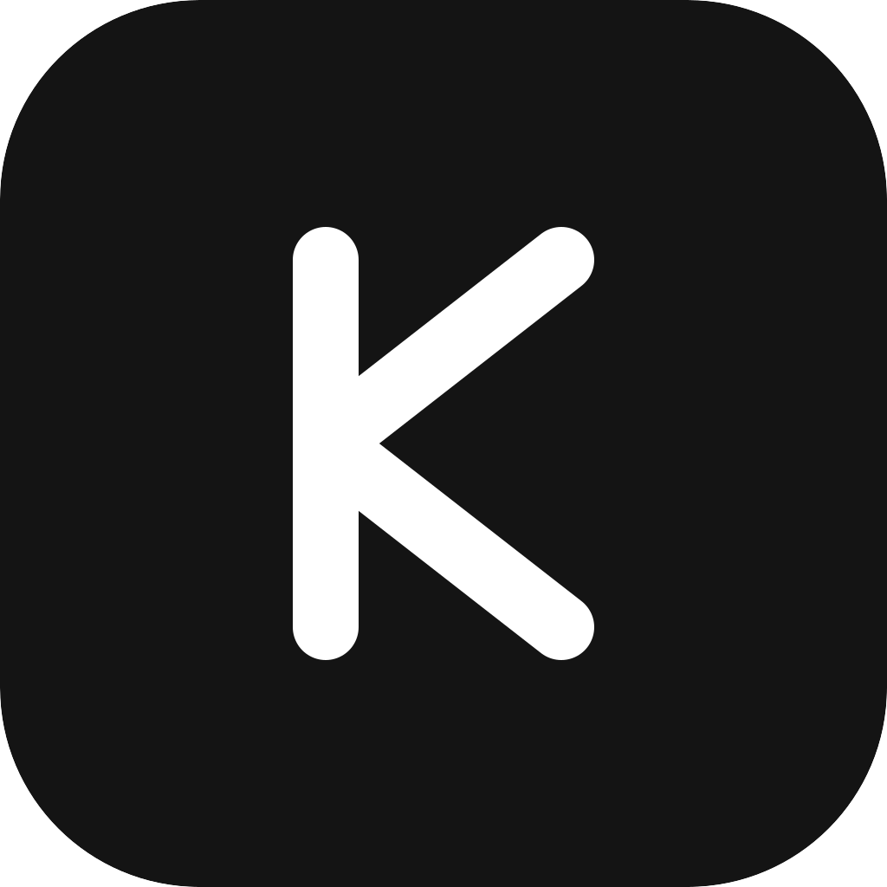
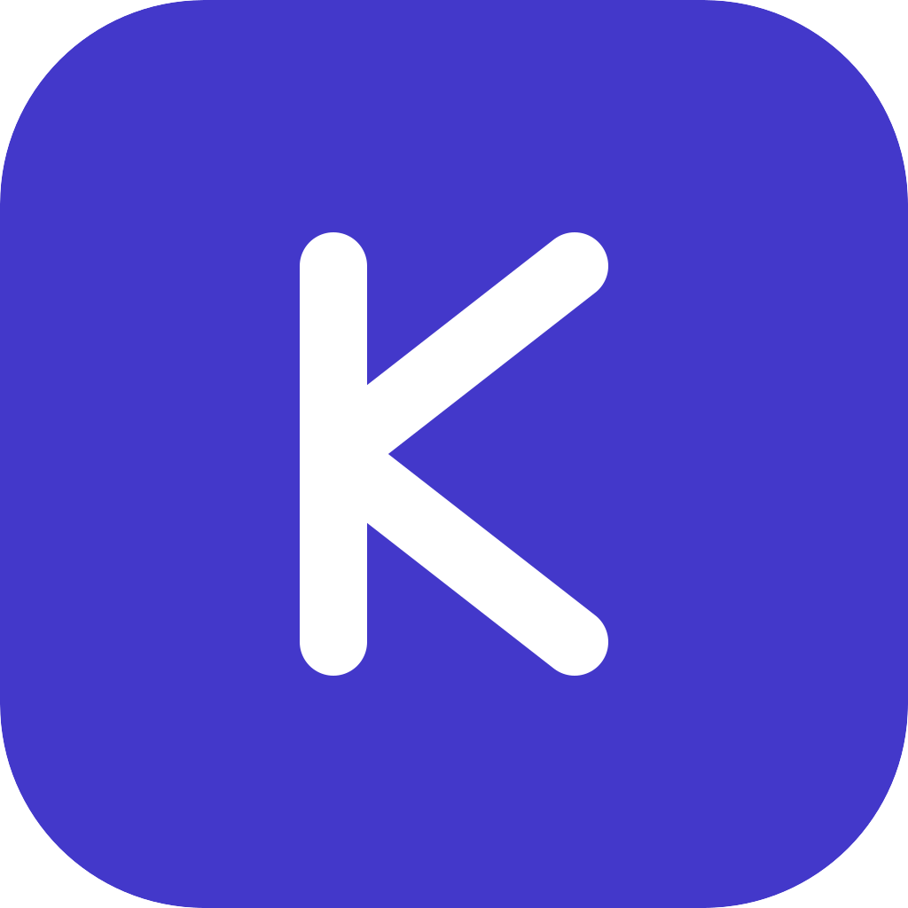
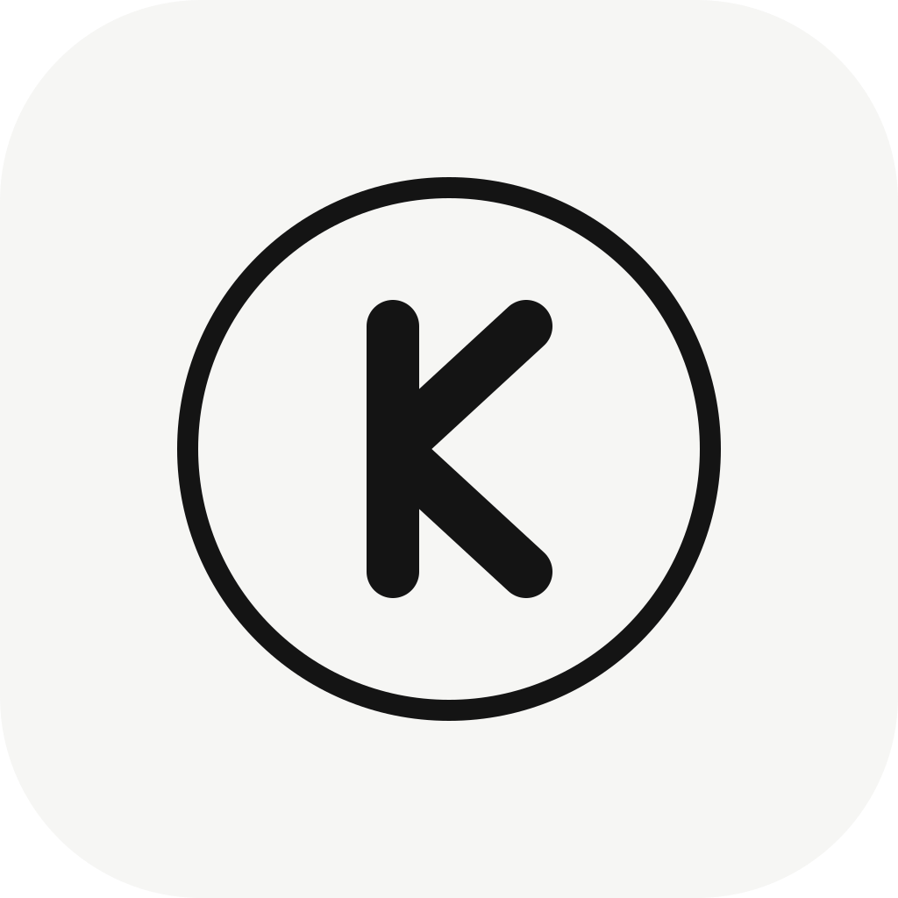

전부 단색·모노라인 기조. 라이트 스퀘어클(둥근 사각형) 바탕에 잉크(#141414) 한 가지 색만 씁니다. 작은 크기에서도 형태가 살아남도록 stroke 굵게, 라운드 캡으로 잡았어요.






A (Chevron-K)를 메인으로, 도크에서 강하게 보이고 싶으면 C (Knockout-K). 개인 브랜드 색을 더 내고 싶으면 B (ㄱ). 셋 다 같은 K 비율을 공유해서 나중에 섞어 써도 통일감이 있어요.
512 / 256 / 128 / 64 / 32 px PNG로 렌더 (Linux .desktop 아이콘용).ico(Windows) / .icns(macOS) 멀티사이즈 번들 생성package.json productName: "Kibo" 등 배포 메타 정리 + electron-builder/forge 설정